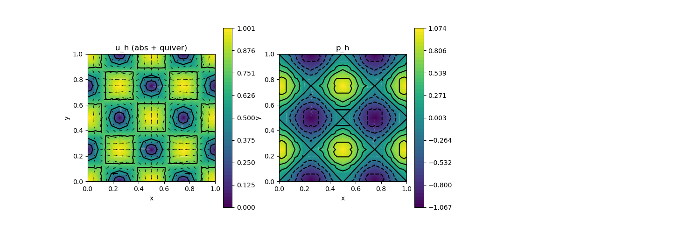

A11 : Navier-Stokes Fixed-point iterations
This example computes the velocity $\mathbf{u}$ and pressure $\mathbf{p}$ of the incompressible Navier–Stokes problem
\[\begin{aligned} - \mu \Delta \mathbf{u} + (\mathbf{u} \cdot \nabla) \mathbf{u} + \nabla p & = \mathbf{f}\\ \mathrm{div}(u) & = 0 \end{aligned}\]
with exterior force $\mathbf{f}$ and some parameter $\mu$ and inhomogeneous Dirichlet boundary data.
The convection term can be discretized in (at least) three different ways, leading to three different fixed-point iteration schemes:
- Newton iteration (when discretised as a NonlinearForm)
- Picard iteration (when discretised as a BilinearForm)
- fully explicit iteration (when discretised as a LinearForm)
This example script has a test case that checks that the result of all three iterations are the same.
module ExampleA11_NavierStokesFixpointIterations
using GradientRobustMultiPhysics
using ExtendableGrids
using GridVisualize
using SimplexGridFactory
using Triangulate
# flow data for boundary condition, right-hand side and error calculation
function get_flowdata(μ)
u = DataFunction((result,x) -> (
result[1] = sin(2*pi*x[1])*sin(2*pi*x[2]);
result[2] = cos(2*pi*x[1])*cos(2*pi*x[2]);
), [2,2]; dependencies = "X", name = "u", bonus_quadorder = 5)
p = DataFunction((result,x) -> (result[1] = (cos(4*pi*x[1])-cos(4*pi*x[2])) / 4), [1,2]; dependencies = "X", name = "p")
Δu, ∇p = Δ(u), ∇(p)
f = DataFunction((result,x) -> (
result .= -μ*Δu(x) + ∇p(x)
), [2,2]; dependencies = "X", name = "f", bonus_quadorder = 5)
return u, f
end
# everything is wrapped in a main function
function main(;
μ = 1e-1, # viscosity
Plotter = nothing, # Plotter for visualization (e.g. PyPlot)
iterationtype = 1, # convection term discretisation (1 = Newton, 2 = Picard, 3 = just in right-hand side)
verbosity = 0)
# set log level
set_verbosity(verbosity)
# FEType (Hdiv-conforming)
FETypes = [H1P2{2,2}, L2P1{1}] # Scott-Vogelius
# load exact flow data
u, f = get_flowdata(μ)
# problem description
Problem = PDEDescription("Navier-Stokes Equations")
add_unknown!(Problem; equation_name = "momentum equation", unknown_name = "u")
add_unknown!(Problem; equation_name = "incompressibility constraint", unknown_name = "p", algebraic_constraint = true)
add_operator!(Problem, [1,1], LaplaceOperator(μ))
add_operator!(Problem, [1,2], LagrangeMultiplier(Divergence))
# convection term discretised in 3 ways
function convection_kernel(result, input)
uh, ∇uh = view(input,1:2), view(input,3:6)
result[1] = ∇uh[1]*uh[1] + ∇uh[2]*uh[2]
result[2] = ∇uh[3]*uh[1] + ∇uh[4]*uh[2]
end
# add convection term as chosen by iterationtype
if iterationtype == 1 # Newton for c(u_h, u_h, v_h)
add_operator!(Problem, 1, NonlinearForm(Identity, [Identity, Gradient], [1,1], convection_kernel, [2,6]; name = "((#1⋅∇)#1, #T)"))
elseif iterationtype == 2 # Picard (adds c(u_old, u_h, v_h) on left-hand side)
add_operator!(Problem, [1,1], BilinearForm([Gradient, Identity], [Identity], [1], Action(convection_kernel, [2,6]); name = "((#1⋅∇)#1, #T)", transposed_assembly = true))
elseif iterationtype == 3 # fully explicit (adds c(u_old, u_old, v_h) on right-hand side)
add_rhsdata!(Problem, 1, LinearForm(Identity, [Identity, Gradient], [1,1], Action(convection_kernel, [2,6]); name = "((#1⋅∇)#1, #T)", factor = -1))
end
# add right-hand side data
add_rhsdata!(Problem, 1, LinearForm(Identity, f))
# add boundary data (fixes normal components of along boundary)
add_boundarydata!(Problem, 1, [1,2,3,4], InterpolateDirichletBoundary; data = u)
add_constraint!(Problem, FixedIntegralMean(2,0))
# show final problem description (without stabilizing terms)
@show Problem
# get grid and barycentric refinement
xgrid = barycentric_refine(uniform_refine(grid_unitsquare(Triangle2D), 3))
# generate FES spaces and solution vector
FES = [FESpace{FETypes[1]}(xgrid), FESpace{FETypes[2]}(xgrid)]
Solution = FEVector(FES)
# solve
solve!(Solution, Problem; skip_update = iterationtype == 3 ? -1 : 1, maxiterations = 20, target_residual = 1e-13, show_statistics = true)
# plot last solution and convergence hisotry
p = GridVisualizer(; Plotter = Plotter, layout = (1,3), clear = true, resolution = (1500,500))
scalarplot!(p[1,1], xgrid, view(nodevalues(Solution[1]; abs = true), 1, :), levels = 3, colorbarticks = 9, title = "u_h (abs + quiver)")
vectorplot!(p[1,1], xgrid, evaluate(PointEvaluator(Solution[1], Identity)), spacing = 0.05, clear = false)
scalarplot!(p[1,2], xgrid, view(nodevalues(Solution[2]),1,:), levels = 7, title = "p_h")
return Solution
end
# checks if the solutions of all three iteration schemes are the same
function test(; μ = 1e-1)
SolutionNLF = main(; μ = μ, iterationtype = 1)
SolutionBLF = main(; μ = μ, iterationtype = 2)
SolutionLF = main(; μ = μ, iterationtype = 3)
distance1 = maximum(SolutionNLF.entries - SolutionBLF.entries)
distance2 = maximum(SolutionNLF.entries - SolutionLF.entries)
return max(distance1, distance2)
end
endThis page was generated using Literate.jl.
Default output:
julia> ExampleA11_NavierStokesFixpointIterations.main()
Problem =
PDE-DESCRIPTION
===============
system name = Navier-Stokes Equations
id | unknown name / variables [#A, #T] / equation name
[1] | u / ["u", "v"] / momentum equation
[2] | p / ["p", "q"] / incompressibility constraint
LHS block | PDEOperator(s)
[1,1] | 0.1 (∇u,∇v) (APT = SymmetricBilinearForm, AT = ON_CELLS, regions = [0])
| ((u⋅∇)u, v) [AD-Newton] [∂u] (APT = NonlinearForm, AT = ON_CELLS, regions = [0])
[1,2] | -(p, div(v)) (APT = BilinearForm, AT = ON_CELLS, regions = [0], transposed copy to [2,1] with factor -1.0)
[2,1] | none
[2,2] | none
RHS block | PDEOperator(s)
[1] | (f, id(v)) (APT = LinearForm, AT = ON_CELLS, regions = [0])
[2] | none
BoundaryOperators[1] : InterpolateDirichletBoundary (bregions = [1, 2, 3, 4], data = u)
BoundaryOperators[2] :
GlobalConstraints[1] : Mean[2] != 0
┌ Info: ========== Solving Navier-Stokes Equations ==========
│ Equation (1.1) momentum equation for u (discretised by H1P2{2,2}, ndofs = 3138)
└ Equation (1.2) incompressibility constraint for p (discretised by L2P1{1} (broken), ndofs = 2304)
ITERATION | LSRESIDUAL | NLRESIDUAL | TIME ASSEMBLY/SOLVE/TOTAL (s)
-----------------------------------------------------------------------
init | | 1.04e+01/5.10e-06/1.05e+01
1 | 3.758496e-15 | 9.078060e-02 | 1.54e-01/4.69e-02/1.33e+00
2 | 4.362783e-15 | 5.415216e-09 | 1.53e-01/9.71e-02/2.51e-01
3 | 3.841268e-15 | 5.212113e-15 | 1.57e-01/3.80e-02/1.96e-01
total | | 1.09e+01/1.82e-01/1.34e+01
┌ Info: =================================== STATISTICS ===================================
│ op position | runtime (s) | last alloc | total alloc | op name
│ ----------------------------------------------------------------------------------
│ LHS[1,1][1] | 6.6593e-02 | 2.0560e+04 | 8.6243e+05 | 0.1 (∇u,∇v)
│ LHS[1,1][2] | 1.8905e+00 | 8.0704e+05 | 1.8590e+07 | ((u⋅∇)u, v) [AD-Newton] [∂u]
│ LHS[1,2][1] | 2.5874e+00 | 1.9819e+06 | 1.9819e+06 | -(p, div(v))
└ RHS[1,][1] | 3.8915e+00 | 3.2912e+07 | 3.8661e+08 | (f, id(v))